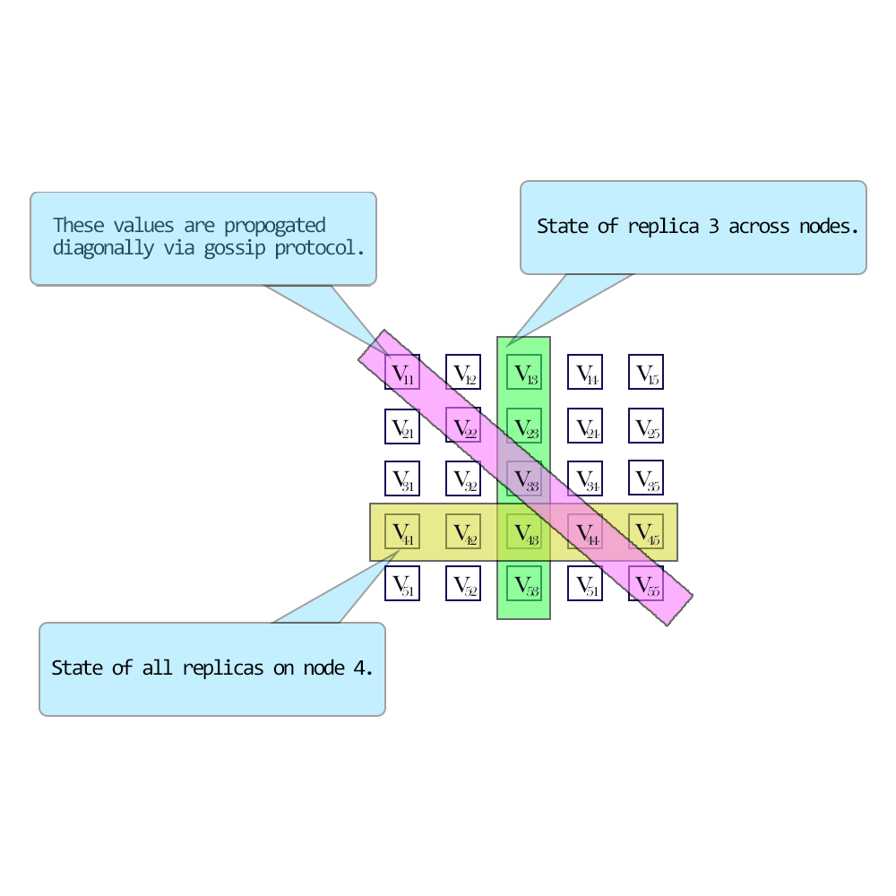
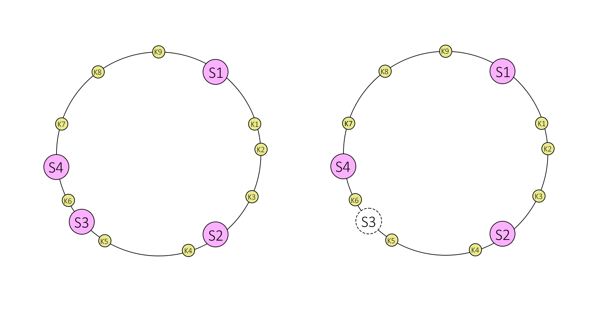
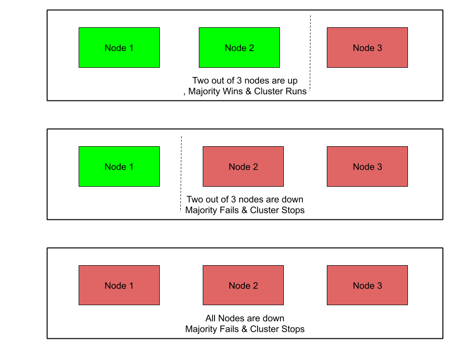
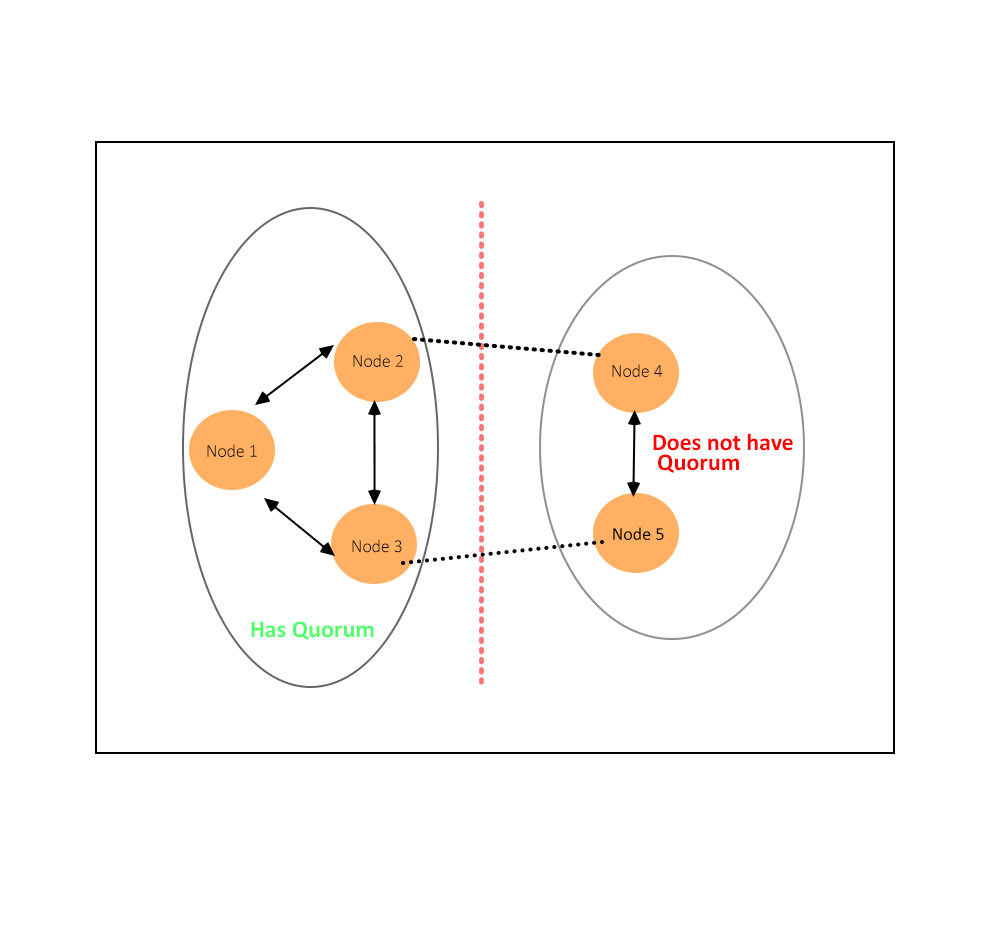

重要概念
讓我們來看看在討論 NoSQL 或分散式系統時的一些重要概念。
CAP 定理
在 2000 年 ACM 的 PODC 研討會主題演講《Towards Robust Distributed Systems》中，Eric Brewer 提出了現今被大型網路公司及 NoSQL 社群廣泛採用的所謂 CAP 定理。CAP 是 Consistency（一致性）、Availability（可用性）與 Partition Tolerance（分割容忍性）的縮寫。
-
一致性（Consistency）
指系統執行後的資料一致程度。分散式系統稱為一致性系統，當一個來源寫入資料後，該資料會對所有讀者可見。不同 NoSQL 系統支援不同層級的一致性。
-
可用性（Availability）
指系統在硬體或軟體故障時對功能喪失的反應能力。高可用性意味著系統即使部分系統因故障或升級而停止服務，仍能持續處理操作（讀取與寫入）。
-
分割容忍性（Partition Tolerance）
是指系統在網路分割事件發生時仍能持續運作的能力。網路分割發生時，系統會形成兩個或多個無法跨網域通訊的網路區塊，且這種隔離可能是暫時或永久的。
Brewer 主張在共享資料系統中，最多只能選擇上述三個特性中的兩個。CAP 定理也說明只能從一致性、可用性和分割容忍性中擇二求。隨著大型應用案例增加，偏好強調可靠性，因此可用性與冗餘比一致性更被重視。結果是這些系統難以符合 ACID 性質，透過放寬一致性需求來達成，即所謂的最終一致性。
最終一致性（Eventual Consistency）意指隨著時間推移，所有讀者最終會看到寫入的資料：「系統在穩態下會回傳最後寫入的值」。因此，客戶端可能會因為更新進行中而遇到資料不一致的狀態。例如，在複寫的資料庫中，更新發生於某一節點，該節點再將最新資料同步給其他複本節點，使得複本節點最終擁有最新版本。
NoSQL 系統支援不同等級的最終一致性模型，例如：
-
讀取自己的寫入（Read Your Own Writes Consistency）
客戶端在寫入後可立即看到更新的內容。讀取可以從非寫入節點取得，但可能無法立刻看到其他用戶端的更新。
-
Session 一致性（Session Consistency）
在同一個工作階段（session）範圍內，客戶端可以看到其資料的更新。通常意指讀寫操作發生在同一伺服器上，使用相同節點的其他客戶端也會收到相同更新。
-
因果一致性（Causal Consistency）
當寫入操作彼此存在潛在因果關係時，系統會保證每個處理程序（process）看到的順序一致。不過，不同處理程序對同時發生的寫入可能會以不同次序觀察。
當同一分割區並發更新機率較低，或客戶端不需立即依賴自身或其他用戶的即時更新狀況，最終一致性十分實用。
系統或系統部分所選擇的一致性模型，會決定請求導向的位置，例如複本節點。
CAP 選擇示意
| 選擇 | 特性 | 範例 |
| 一致性 + 可用性
（放棄分割容忍性） |
兩階段提交
快取失效協議 |
單一站點資料庫
叢集資料庫 LDAP xFS 檔案系統 |
| 一致性 + 分割容忍性
（放棄可用性） |
悲觀鎖定
使少數分割區不可用 |
分散式資料庫
分散式鎖定 多數決協議 |
| 可用性 + 分割容忍性
（放棄一致性） |
過期／租約
樂觀式衝突解決 |
DNS
網路快取 |
分散式系統中的資料版本控制
當資料分散於多節點，且可同時在不同節點修改時（假設嚴格一致性被強制執行），會產生並發更新衝突需要解決。一些流行的衝突解決機制包括：
-
時間戳記（Timestamps）
最直觀的方案。依時間先後排序更新，選擇最新的更新。但這仰賴基礎架構中時鐘的同步，當系統跨地理位置時更為複雜。
-
樂觀鎖定（Optimistic Locking）
給每筆資料更新指定唯一值（如時鐘或計數器），客戶端更新時必須標明要更新的資料版本，必須記錄資料版本的歷史。
-
向量時鐘（Vector Clocks）
向量時鐘是由每個節點的時鐘值組成的元組。在分散式環境中，每個節點會維護此元組代表其自己與對等複本的狀態。時鐘值可為當地時鐘的實際時間戳或版本號。

向量時鐘示意圖
向量時鐘的優點：
- 不依賴時鐘同步
- 不需對修訂號做整體排序來推論因果關係
不需在不同節點存放與維護多版本資料。**
分割（Partitioning）
當資料量超過單一節點容量時，需思考拆分資料、建立複本用於負載平衡與災難復原。依基礎設施的動態程度，常見做法如下：
-
記憶體快取
這類為分割的記憶體資料庫，主要用於短暫資料。常作為傳統關聯資料庫（RDBMS）的前端快取。最常用的資料會從 RDBMS 複製到記憶體資料庫加速查詢，並減輕後端資料庫負擔。常見例子有 Memcached 或 Couchbase。
-
叢集（Clustering）
傳統叢集將叢集拓撲從用戶端抽象化，用戶端無需知道資料所在節點位置即可操作。叢集常用於傳統 RDBMS，可擴展持久層至一定範圍。
-
讀寫分離
多個複本節點存放相同資料，寫入集中指定節點（單一領導者 Leader）或多節點（多領導者 multi-Leader）。其餘複本節點（追隨者 Follower）負責讀取要求。領導者會非同步地複寫資料給所有追隨者，但可能產生寫入延遲，若領導者故障未同步完成，追隨者可轉為領導者。該模型難以強制完全一致性，且須考慮讀寫流量比例，當寫入量高於讀取時不適用。複寫方式不一，有系統定期全量同步，也有差量同步或傳遞操作後追趕版本。
-
分片（Sharding）
分片指將資料均勻分散（儲存與處理能力）於多節點叢集中。亦意涵資料局部性，即相似或關聯資料群聚，有助加速存取。分片可再複寫以支援負載平衡與災備。單一分片複本可集中接受寫入（單領導者），或多複本皆接受寫入（多領導者）。讀取則分散於多複本。因資料分散多節點，客戶端需一致性了解資料所在節點。以下將介紹常用技術。分片缺點是無法跨分片做 JOIN，需由上游或下游系統匯總多分片結果。

分片示意圖
雜湊（Hashing）
雜湊函數將一段資料，通常描述某物件且大小不固定，映射為另一段資料，通常為整數，稱為 雜湊碼（hash code）或 雜湊值（hash）。在分割資料庫中，一個重要目標是將鍵穩定地映射至伺服器或複本。
例如：簡單使用模除（mod）函數作為雜湊：
_p = k mod n_
其中
p -> 分割區
k -> 主鍵
n -> 節點數量
此簡單雜湊的缺點是叢集拓撲變化時，資料分布也會改變。記憶體快取可接受節點加入/離開後重新分布並快取重建。但持久化資料無法如此彈性，因新節點無法服務其資料分割，這就引出一致性雜湊。
一致性雜湊（Consistent Hashing）
一致性雜湊是一種分散式雜湊方案，獨立於伺服器數量或物件數量，將伺服器與物件在抽象圓環（hash ring）上定位。此設計允許伺服器及物件擴展時不影響整體系統。
假設雜湊函數 h() 產生 32 位元整數，要決定鍵 k 會送到哪臺伺服器，尋找哈希值 h(s) 為最小且大於 h(k) 的伺服器 s。圓環設計意指找不到比哈希值大的伺服器時，從頭開始尋找。

一致性雜湊示意圖
一致性雜湊中，增加或移除伺服器時，僅該伺服器的鍵需重新分配。例如移除伺服器 S3，S3 上所有鍵會移至 S4，且 S4 與 S2 上的鍵不會移動。但問題是鍵並未平均分配至剩餘伺服器，全部都指派到 S4，加重負載。
為均勻分散負載，會為每台伺服器建立固定數量複本（虛擬節點），並分布於圓環。例如不再只有 S1, S2, S3，而是有 S10, S11, …, S19，S20, S21, …, S29 和 S30, S31, …, S39。複本數目稱為 權重（weight），視情況而定。
所有映射到複本 Sij 的鍵都存於伺服器 Si。搜尋鍵時同樣找圓環上鍵的位置，再順時針移動找到一伺服器複本，鍵即存於其母伺服器。
比如移除伺服器 S3，必須刪除其標籤 S30,S31,…S39，相鄰鍵會自動重分配到 S1X, S2X 和 S4X。原本分配給 S1, S2 與 S4 的鍵不變。
添加伺服器也類似。加入 S5（取代 S3）需新增標籤 S50,S51,…S59。理想狀況下，約四分之一來自 S1, S2 與 S4 的鍵會分配至 S5。
應用於永久性儲存時，仍有問題：節點移除時，存於該節點的資料當無法複製至他人前將遺失；新增節點時，原相鄰節點對某些資料仍保有存取權但不再被查詢，此稱為「資料孤島」。為解決此問題，會引入複本因子 (r)。
引入複本除提升可靠性外，也平衡了讀請求負載，能由任何負責該資料的節點處理。若用戶端須從多臺伺服器讀取不同版本資料，負責投票以達成共識，會降低負載平衡效率，無法擴展。
法定人數（Quorum）
法定人數是叢集中必須在線且能互相通訊的節點數量下限。若故障節點數超過此數，叢集會停止運作。
取得法定人數需擁有多數節點，通常為 (N/2 + 1)，其中 N 為系統節點總數。例如：
-
三節點叢集需 2 個節點作為多數。
-
五節點叢集需 3 個節點。
-
六節點叢集需 4 個節點。

法定人數範例
網路問題可能導致叢集節點間通訊中斷。一群節點可互相通訊，卻與另一群無法聯繫，稱為叢集分割（split brain）。
具有法定人數的分割區可繼續操作，其他區塊則被移除出叢集。
例如：在五節點叢集中，節點 1、2、3 能互通，但無法與節點 4、5 連線。節點 1、2、3 為多數，持續運作為叢集；節點 4、5因為是少數停止作為叢集。若節點3失聯，所有節點皆停止叢集運作。但仍會繼續監聽通訊，網路恢復時叢集可重組並重新運行。
下圖展示劃分為兩群組的叢集中法定人數決策。

叢集法定人數示例